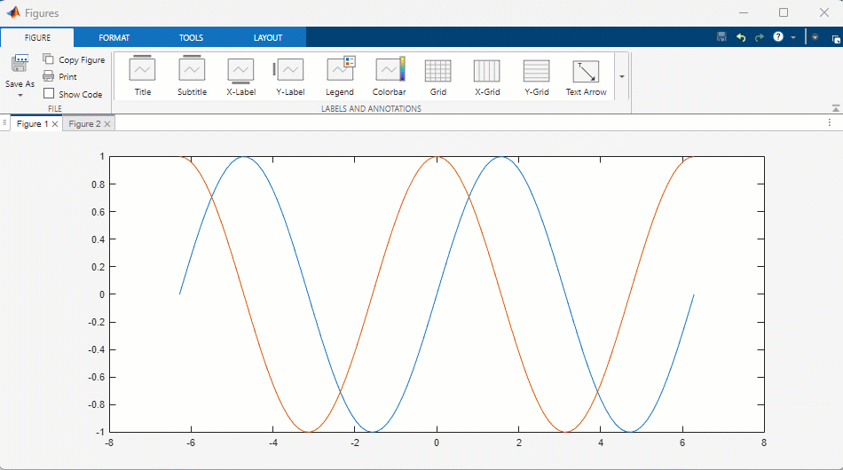
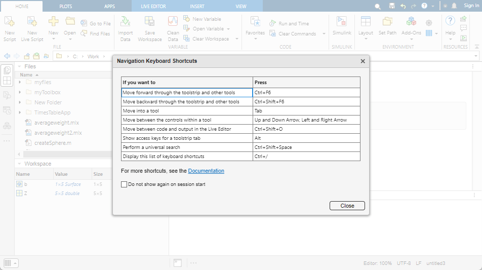

Overview of New MATLAB Desktop Layout
Starting in R2025a, MATLAB® includes a new desktop layout with customizable sidebars to access side panels like the Debugger panel for managing breakpoints, Project panel for collaboration, and Source Control panel for interacting with Git™ and SVN. The updated layout also includes theming, a new figure experience, global search, improved accessibility, and more.
Desktop Layout
Access desktop using new layout with customizable sidebars.
|
| The sidebars on the left, right, and bottom of the desktop show the tools that are docked in the desktop.
For more information about how to configure your desktop layout, see Configure the Desktop. |

Theming
Change MATLAB desktop colors using themes.
|
| To select a dark theme:
For more information, see Change Desktop Theme and Colors. |

Figures
Organize, explore, customize, and generate code for figures in a docked figure container.
|
 | Figures open as tabs in a docked figure container in the MATLAB desktop by default.
|
Global Search
Access toolstrip actions, settings, and Help Center resources using search.
|
| Use the search box in the top-right corner of the desktop to access:
|

Code Suggestions
Show code suggestions automatically in Command Window.
|
| MATLAB automatically provides real-time suggestions as you type in the Command Window.
For more information, see Code Suggestions. |

Accessibility
Use screen reader and keyboard to interact with MATLAB and adjust colors and zoom level.
|
 | MATLAB provides several features to help make is accessible to users.
For more information, see Accessibility in MATLAB. |